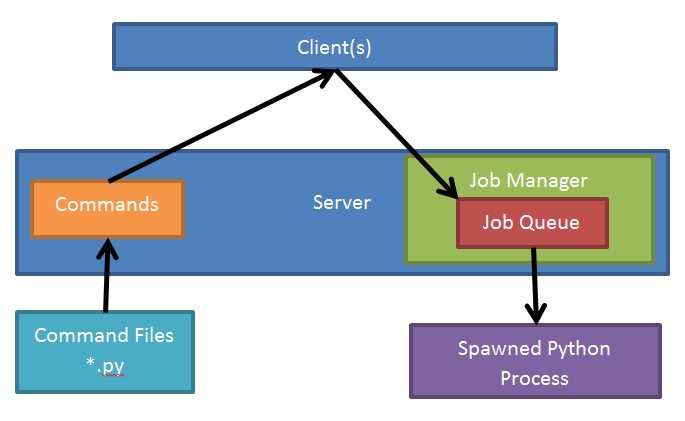

Script server design
What it should do
Accept multiple clients
Serve up a list of available commands for the specified instrument over some protocol. The command should contain command parameters and a description, for example:
Name:
set_eiParameters: incident energy (double)
Description: Positions the choppers to allow the specified incident energy through
The commands are instrument specific scripts written by the instrument scientists and/or controls team, and are stored on the server
New commands can be added relatively quickly without requiring changes to the client
Accept and queue up jobs from clients and add them to the job queue
Provide feedback on the status of the job queue
Provide feedback on the status of the current job (% done, current line etc.)
Iterate through the job queue
Execute the jobs, one at a time from the queue
Allow the job queue to be edited (e.g. reordered, jobs skipped or repeated)
Allow the current job to be paused or aborted
When a job is paused the next action is to resume it or abort it. It is not possible to run a different job then return to the paused job
If the job is paused and the user manually changes the beamline then that change is keep when the job is resumed
If a job is aborted it can be run again, but it will start from the beginning; however, it can be edited before being re-run
Allow individual jobs to be edited (excluding the current job?)
Provide a description of what existing jobs consist of (to allow editing)
Provide an estimate of how long a job will take
Provide the elapsed time for the current job
Run a black-box script as a job (see submitted scripts section below)
Provide script validation, e.g. allow a dry run of a script or job
Provide robust error handling and reporting
Submitted scripts
Different types of script:
Script server aware – created by a script generator
Loops unwound so each iteration is used to produce a job
Each job has tags for providing feedback, such as progress information, to the clients
Script server aware – written by hand
Includes tags for the script server to provide extra functionality for the script server; such as “pause points” and progress information
Black-box scripts – written by hand
Contains no information for the script server
Script server runs it as a single job but cannot pause it or report progress
Can be aborted
Architectural design
Decisions already made:
Scripts, commands and jobs will be written and run in
CPython
A simple diagram of the design:

Commands:
The instrument specific commands are loaded from a certain area on the NDX
The command sources contain documentation describing the command and the parameters
The list of commands and their information are served
Jobs:
The Job Queue contains the jobs to be run
The jobs are Python scripts/snippets
The Job Manager is responsible for managing the queue and the running of the job
For each job the Manager spawns a new [#point1 (1)] Python process to run the job
If the job is configured correctly the Job Manager can query the status of the job
This means there is no state shared between jobs – do we want this?
Security
There are two levels of security. Logging into the script server and logging into NICOS. Logging onto the script server allows you to put commands onto the queue.
Both tokens and user names should be readable by the GUI via PVs secured in the block server. These PVs will be readable only by clients with write access to the server. The token should be auto-generated on start/restart of the script server and obfuscated by hashing and salting.
It should not be possible to access the proxy from any location other than localhost.
In the future we can have users with different levels those that can write to the system can access a different user account to those who don’t.